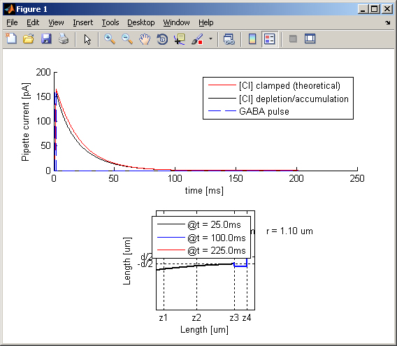
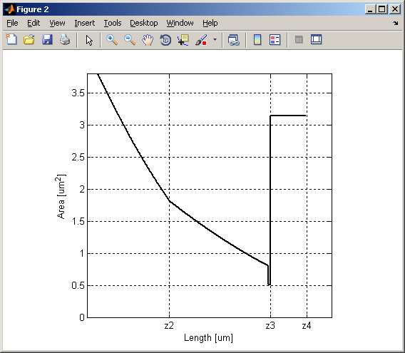

Effects of pipette tip and membrane patch geometry on GABAa-mediated currents, in patch-clamp experiments -------------------------------------------------------------------- January 31st 2011 - Michele Giugliano, PhD Ion currents, mediated by GABAa-receptors in outside-out membrane patches, may alter the concentration of Chloride ions inside the pipette and the membrane patch. GABAa-receptors are in fact ionotropic synaptic receptors, selective to Chloride ions. Therefore, chloride fluxes across the membrane patch correlate to GABAa-receptor opening. Chloride ions accumulation, depletion and diffusion, inside the pipette and the membrane patch, affect by definition the Chloride equilibrium (i.e. Nernst) electrical potential. This in turn changes the ionic driving force underlying GABAa-mediated currents. It follows that, in case of very small volumes and confined geometries, voltage-clamp recordings of GABAa- receptor currents carry information on both i) Chloride diffusion and ii) receptor kinetics. The relevance of (i) and (ii) have been studied numerically by defining a 1-dimensional biophysical model, released here to the interested user. The model refers to the manuscript: Mirko Moroni, Istvan Biro, Michele Giugliano, Ranjit Vijayan, Philip C. Biggin, Marco Beato, and Lucia G. Sivilotti. Chloride Ions in the Pore of Glycine and GABA Channels Shape the Time Course and Voltage Dependence of Agonist Currents. J Neuroscience 2011 -------------------------------------------------------------------- Model description: Refer to the original paper Method section, as well as to its Supplemental Materials, for a complete model description. Very briefly, a 1-dimensional diffusion equation has been complemented by appropriate boundary conditions, accounting for a multi-taper conical pipette and a simplified outside-out membrane-patch geometry. This equation simulates Chloride ion diffusion inside the pipette very tip and in proximity to the membrane-patch, determining at each time-step the actual Chloride concentration. Outside the membrane-patch, the Chloride concentration is assumed to be fixed and set to a bulk value. A reduced model of ligand-gated ohmic ion current density has been then coupled to the simulation of Chloride diffusion, making it possible to account for 1) depletion or accumulation of Chloride in response to opening of GABAa receptors, as well as for 2) changes in the Chloride reversal potential and ion current driving force. The full model has been implemented in MATLAB, by an implicit scheme for unconditional numerical stability, and a systematic parameters exploration has been carried out on a large university computer cluster. Code description: The source code released here, refers to a full-working demo that can be employed for replicating the paper results and for extending its analysis. It is invoked by changing the current working directory to the folder where the package has been uncompressed (e.g. cd MyDocuments/ModelDB) and then typing "main" at the MATLAB prompt. The code is extensively commented and should be self-explicative, in addition to the information provided by the paper as main text and supplemental material. main.m : is the main routine that should be invoked and that should be studied. It calls matlab/set_parameters.m that sets the numerical values of each parameter. It calls matlab/simulation_step.m that performs a single temporal iteration step, solving for the concentration vector. At the end of the computation, the script displays the results as a plot related to Figure 3 in the paper, composed by two panels:   They report the actual temporal profile of the GABAa-receptors mediated ion current, recorded by the virtual pipette, comparing the effect of Chloride diffusion to the theoretical prediction (i.e. the voltage-clamp current profile expected from the kinetic properties of the GABAa-receptors activation and deactivation alone). A snapshot of the spatial concentration profile of Chloride at three different moments in time (i.e. at the beginning of the simulation, during the simulated GABA pulse, and at the end of the simulation). The script also invokes the following command, before finishing and returning the control to the user: matlab/plot_free_area_testing.m : is provided for testing and demonstration purposes. It plots the actual model geometry and the free passage area through the pipette and omega-shaped patch.. Interested users should start studying the code of main.m and simulation_step.m. Antwerp, Jan 31st 2011, Michele Giugliano PhD (michele.giugliano@ua.ac.be)